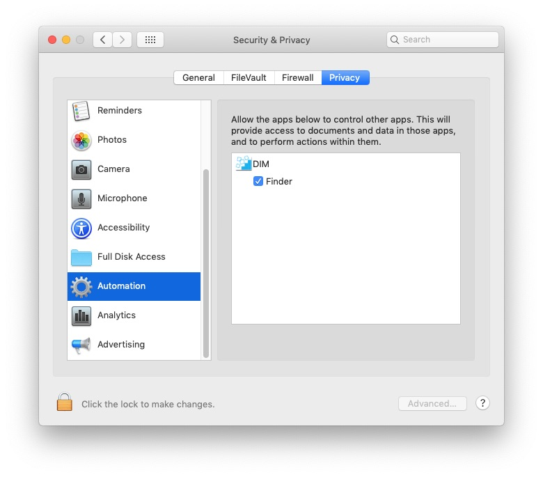
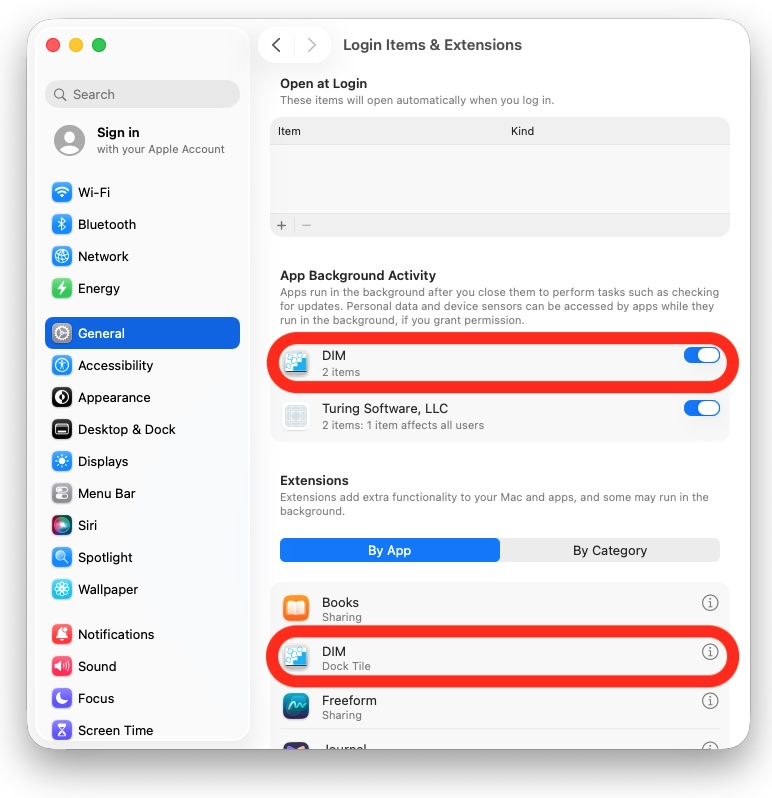

Miscellaneous
1) Requirements
DIM is compiled to support macOS 10.13 (High Sierra) through macOS 26 (Tahoe) for both Apple Silicon and Intel processors. Earlier versions of macOS (10.4 through 10.13) can use DIM 2.1.0.
2) Known Problems/Bugs
Multiple monitors are technically not supported. However, my own use (along with 100s of users) show no problems if both monitors’ arrangements are not changed between the “Memorize Icon Positions” and “Restore Icon Positions”. The worst case scenario here is that some icons may be placed outside of either monitors’ viewing area. If this is the case, click anywhere on the Desktop and then in the Finder’s View menu, simply select Clean Up and all the icons will reappear, most likely in places you don’t like, but at least you can rearrange them.
3) Tricks
After the first time use, specifying DIM as a Login Item will adjust the icons positions after the Finder starts up (make sure to check “Automatically Restore Icon Positions at start” for this behavior). However, if you're running macOS 13 (Ventura) or later, it's better to "Start DIM Helper" and specify actions for the "Login" event. You can do both, but note that any actions DIM Helper does only are executed if DIM is not open. See 14 on "After the first time use" in this Help for more information.
DIM uses its own preference file (stored in ~/Library/Containers/DIM) so different users can use the same application for their own Desktop and Finder windows. Starting in version 4.6, additional preferences are stored in an App Group preference. This allows for data exchange between sandboxed applications (here, DIM Helper and Hide Icons).
If "Memorize icon Positions" is checked and "at Quit" is selected then quitting, log off, restart and shutdown all trigger a memorization.
4) Exporting/Importing Settings
You can import/export DIM Settings from the File menu. Please note, Settings may contain sensitive information (e.g. icon names). These Settings are transferrable between different users and/or Macs. Exported Settings can be viewed in Xcode or via Terminal by using "defaults read exported_settings_file" command. During import, one has options to completely replace the current Settings, merge into current Settings or merge current Settings into the imported Settings. For the latter two options, if the current Settings and imported Settings share an icon Arrangement the resulting icon Arrangement will be the union of the two if "include any missing icons" is selected otherwise the specified icon Arrangement is used.
5) Checking for updates
DIM allows one to check for updates from the main DIM menu. If an update is available, you can either download directly through DIM or use a browser to retrieve the update. Checking for updates may take awhile depending of local machine load and network connection quality. Regardless, no information is sent to the servers other than your IP number which is only tracked by the hosting servicer.
6) System Events
If DIM Helper is running, you can have DIM respond to certain system events (for example: login, computer wake, etc.) with various actions (for example: restore, quit, etc.) if DIM is not running. One can use both the Login event and the default behavior of how DIM starts since any actions caused by an event bypasses the default start behavior of DIM. Finally, DIM must not be running when any action is triggered, otherwise the actions will be ignored. DIM Helper and Hide Icons are only available on Ventura and latter.
7) Terminal commands
On Big Sur (macOS 11) and later, you can monitor DIM via the log stream --predicate 'subsystem == "com.parker9.DIM-4"' --level debug in Terminal to observe various events DIM and its helper apps are doing. For any version of macOS, one can inspect/modify the main DIM preference file with defaults read com.parker9.DIM-4 while defaults read ~/Library/Group\ Containers/group.com.parker9.DIM-4/Library/Preferences/group.com.parker9.DIM-4.plist does the same for the Group App preferences file.
8) FAQ
DIM doesn’t seem to be working correctly, what’s going on? Strange, it’s been working fine for me and many others. First, you are running macOS 10.10 or later? If not, go find DIM 2.1.0, that should work for you (unless you're really old school and are running System 7.5-9, then you need DIM 1.3.1). Next, with DIM not running, try deleting the main preference by defaults delete com.parker9.DIM-4 in Terminal. Then try DIM again. If that doesn’t work, try downloading a fresh copy of DIM. If still not working, perhaps macOS has decided not to allow DIM to talk to the Finder. Go to System Settings…>Privacy & Security and select Automation on the right tab, it should have an entry for DIM on the right that looks something like

Select Finder under DIM. If DIM is not listed, then macOS has decided that DIM can not talk to the Finder. Unfortunately, the only way I know how to fix this is quit DIM and then go into Terminal (Applications/Utilities) and type “tccutil reset AppleEvents” (without the quotes) and hit return/enter. Running DIM now should pop up an macOS alert and make sure you say “OK”. If it’s still not working, you can delete all permissions granted to DIM in the Terminal. First, Quit DIM and in the Terminal enter "sqlite3 ~/Library/Application\ Support/com.apple.TCC/TCC.db 'DELETE FROM access WHERE client IS "com.parker9.DIM-4"'" (strip the outer quotes, but keep the rest). For more information please see here. If that fails, you can drop me an email at DIM@parker9.com with as much detail as you can about the problem, including the macOS version you are using.
DIM just beeps when I try to Restore/Memorize a Finder window! DIM records the POSIX path that a Finder window is showing. The beep indicates that path doesn't exist anymore. This is usually because the path has changed. You will need to save a new Icon Arrangement for the new path.
When Desktop Icons are Hidden, I can't drag anything to the Desktop! That's right, you can't. When "Hide Desktop Icons" is selected in the Action menu, DIM places a window (with the picture of the Desktop without the icons) just over the Desktop itself. Therefore, drag and drop is not to the Desktop but to a picture of the Desktop. You can still get to the Desktop by opening a Finder Window or through the command line. To restore drag and drop to Desktop, you need to "Show Desktop Icons" for the Action menu.
Any particular Icon Arrangement corresponds to what? Any Icon Arrangement refers to either the Desktop or a Finder Window. You can determine if the Icon Arrangement is for the Desktop or Finder window by inspecting the "Number of current ..." or "Number of memorized ..." lines: the word "Desktop" will appear for Desktop, otherwise "window" will appear for a Finder window. If the Icon Arrangement is for a Finder window, by pressing "Restore Icon Positions", a Finder window will either appear or be updated to show which folder this Icon Arrangement belongs to. A beep would signal that the folder no longer exists.
DIM doesn't seem to memorize icon positions at Quit/every ...? DIM needs to be running for "Memorize Icon Positions" checkbox to work. This option simply tells macOS to call DIM at the time interval (or "at Quit"). If DIM is not running, it never receives the notification from macOS. You can just leave DIM open, minimized or hidden for this option to work.
When “Automatically Restore Icon Positions at start” and “Quit” are selected, the countdown is too slow/fast! The integer quitCount in DIM's plist file is how many 1/5 of a second to wait before quitting. If not present, the value is assumed to be 20. defaults write com.parker9.DIM-4 quitCount 50 in the Terminal would cause DIM to wait 10 seconds before quitting.
After waking from sleep or the number/position of displays change, DIM will automatically Restore Icon Positions. The double waitRestore in DIM's plist file is how many seconds to wait before restoring. If not present, the value is assumed to be 10.0. defaults write ~/Library/Group\ Containers/group.com.parker9.DIM-4/Library/Preferences/group.com.parker9.DIM-4.plist waitRestore -float 3.5 (or defaults write com.parker9.DIM-4 waitRestore -float 3.5 for versions before 4.6) in the Terminal would cause DIM to wait 3.5 seconds before restoring after waking. A value of 0.0 will stop the automatic restore. If you running macOS 13 (Ventura) or higher, "Start DIM Helper" will allow a "Repeat timer" or "Power off" to achieve the same effect. In this case, DIM must not be running.
"DIM Helper"/"Hide Icons"/"Dock plugin" isn't working. All of these should have been installed either on first run or when you Start either helper app. Perhaps their permissions were turned off. Go to "System Settings...>General>Login Items & Extensions" and confirm DIM is enabled under "App Background Activity" (for DIM Helper and Hide Icons) and "Extensions" (for Dock plugin):

Checking for updates doesn't seem to be working To check for updates, the Mac must be connected and have access to the internet. If you are getting an error, it probably means that one or more of the servers are down. Simply try again in a few minutes. DIM also needs read/write permission to the Download folders. If it continues to fail, please contact us with any errors it is displaying and what version of DIM is being used.
I want to uninstall DIM, what do I do? Uninstalling DIM is done by simply dragging DIM to the Trash (you may want to Stop Dim Helper and Hide Icons first, if they are running- otherwise the system should eventually figure it out and stop them itself). DIM also created two folders in your home directory at ~/Library/Containers/DIM and ~/Library/Group\ Containers/group.com.parker9.DIM-4 which you can either delete or leave.
Hey, I want to send you money for such a cool thing, how can I do that? Really? I’m sure my wife (and kids) would like that, but it’s not required. If you really do, on the upper right corner, hit the red “Donate?”. Thanks in advance!
8) Files in the distribution
This distribution zip should contain the DIM application and a README file. The actual source code and everything needed to recompile DIM is stored on github. Check the README file for the github address (currently https://github.com/com-entonos/Desktop-Icon-Manager).
9) Warning/Disclaimer/Licenses
Using this application won’t make you more attractive or get you rich. It may even do something horrible to your Mac, though I definitely hope not. Regardless, I haven’t tried to make it completely robust with all possible things that can go wrong. So, for instance, if you run out of storage space while it’s running, I don’t have a clue what it will do. Hopefully just complain and quit. I do know nothing in this application itself will hurt your Mac, but as you know- garbage in is garbage out.
I wrote this for my personal use. I find it useful. I also know 1000s (if not 10,000s) have also found it useful. It’s free and you can give the distribution (i.e. as you got it) to anyone you want. You can’t sell it, though. And if you modify the script and don’t give me credit for the original, you’re simply evil. Don't be evil.
G.J. Parker - http://www.parker9.com (Entonos)